Cold runs G1–G3 · 2026-10-02 · the v1.0.15 candidate pack
Three blind runs of the frozen prompt, each a fresh headless Claude Code session on Opus 5.5 with nothing but the unzipped pack: G1 with every grill question skipped (Mono, the #307 condition), G2 and G3 with the theme answered Console (the s308-D15 protocol, his click: "Take the three fixes, then run it again on the next cut"). The pack is a candidate, not a cut: Apollo-Spider-v1.0.15.zip baked by the house builder in a scratch clone at 853d7f56 (candidate commit 06b27b57, version literals 1.0.14→1.0.15 only), sha256 829c6748…1b43e2, 1,803 files, --check GREEN against its manifest.
Against #307's single run on v1.0.14 (3/3/2/2) the candidate's runs score 2/3/3/3, 3/3/1/2 and 3/3/3/3. Two pages load and drive with no error at all. G2 repeats #307's wiring bug in a new place: its Liquidity and Payments nav clicks throw, so its view never reaches the address bar. The two old defects F01 and F02 stay closed in all three. What blocks a cut is the pack, not the pages: rule 7a hands every build the scope class that rule 1a and _validate_example_fence.py refuse, and the "one headless load" step he took on 29 September is not in the skill.
01 · Twelve scores, each with the one fact that earned it
| Arm | Rich | Full | Persistent | Interactive |
|---|---|---|---|---|
| #307 · v1.0.14 · Mono | 3 | 3 | 2 | 2 |
| G1 · Mono (all skipped) | 2 | 3 | 3 | 3 |
| G2 · Console | 3 | 3 | 1 | 2 |
| G3 · Console | 3 | 3 | 3 | 3 |
| Arm · score | The fact |
|---|---|
| G1 rich 2 | 11 canon scopes but one chart on the whole page (inventory.json: chart_count 1); Accounts and Payments are lists only. The session declined a second chart because it would reuse the series colours for different data. |
| G1 full 3 | 871 payments, 16 accounts, 6 entities, 6 currencies, footer; scrollWidth = innerWidth at 1440 and 820 (render.json). |
| G1 persistent 3 | Reload restored all 10 measured keys (view, filter chip, range, sort, page, theme…); a cold load of the URL in a fresh browser restored 8, losing only the theme, which lives in local storage (G1/drive.json → persistence). |
| G1 interactive 3 | 19 of 19 steps moved what they should, 0 pageerrors, 0 console errors; the drawer takes focus; CSV downloads; the 820 menu sheet navigates. |
| G2 rich 3 | 13 scopes; stacked area and stacked bar drawn by dvRender; list/table switch; approving a payment in the drawer changes the headline figures (probe2.json → G2.approve.kpi_changed true). |
| G2 full 3 | 395 payments, 11 accounts, 5 entities, 5 currencies, footer; no horizontal overflow at either width. |
| G2 persistent 1 | Filters, range, sort and page survive a reload, but the view does not: on Payments, reload returns to Overview with the URL unchanged (probe2.json → G2.view_persist). setView() throws before it reaches writeURL(). |
| G2 interactive 2 | 21 of 21 steps moved something, but 4 pageerrors: the first Liquidity click throws Cannot set properties of null (setting 'hidden') at renderPayments (dashboard line 2440) and every Payments click throws …reading 'isConnected' at chart() (line 2327). |
| G3 rich 3 | 17 scopes, the most of any cold run: line and donut by the engine, runway bar, data grid with sort, column filters, selection and approve, drawer. |
| G3 full 3 | 359 payments in view, 16 accounts, 7 entities, 5 currencies, footer, no overflow. Blemishes: the grid's keyboard-help paragraph prints under the table and "Value date" truncates (as at #307). |
| G3 persistent 3 | Reload and a cold URL in a fresh browser both restored view, filter, range, sort and page (G3/drive.json); only the row selection is not kept. |
| G3 interactive 3 | 22 of 22 steps, 0 pageerrors, 0 console errors; grid sort both ways, rows per page, page 2, and selecting a pending row enables Approve selected. |
02 · The renders — default state, 1440 and 820, light then dark
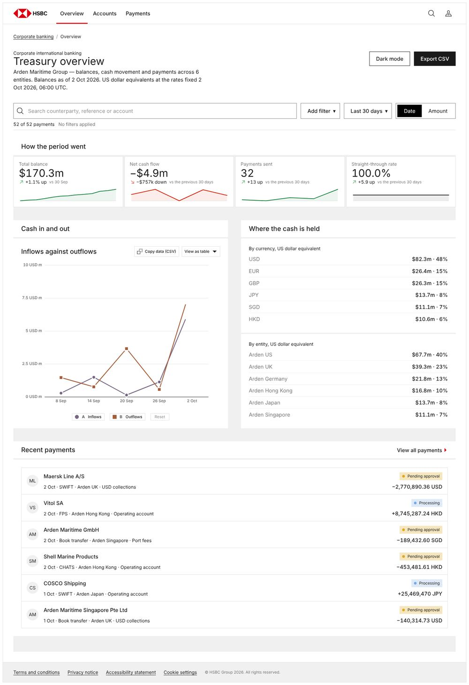
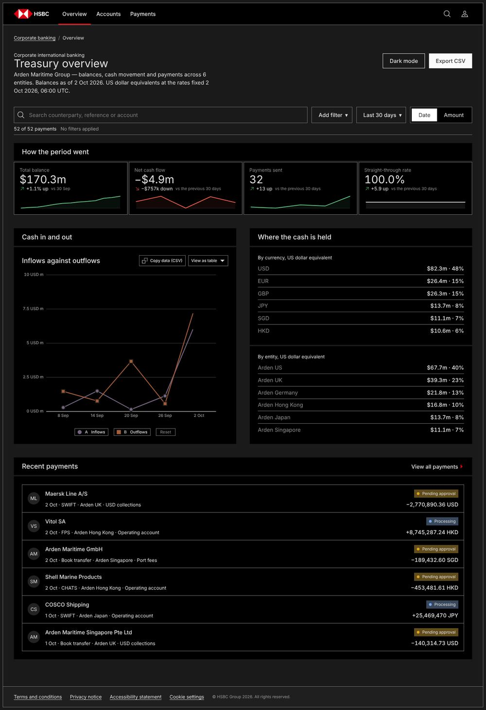
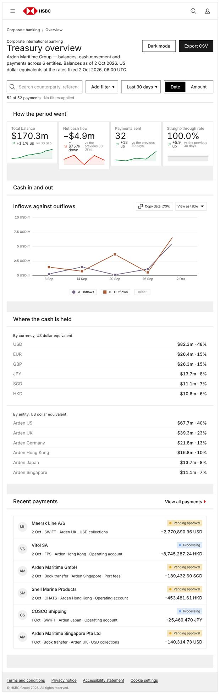
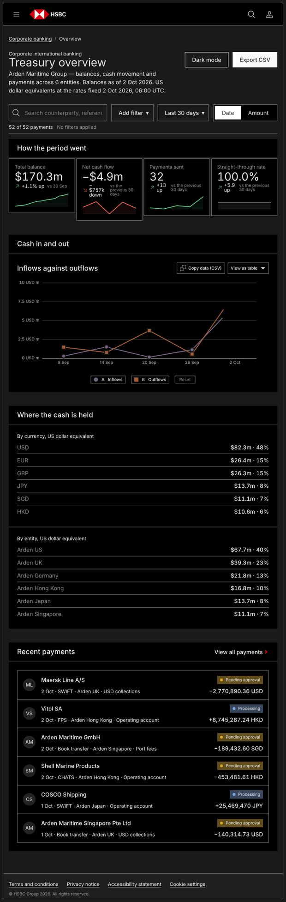
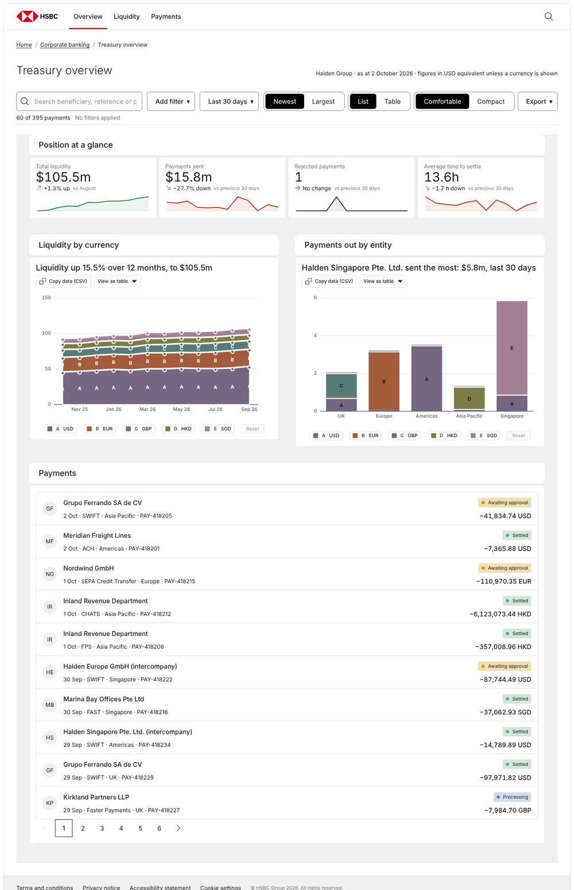
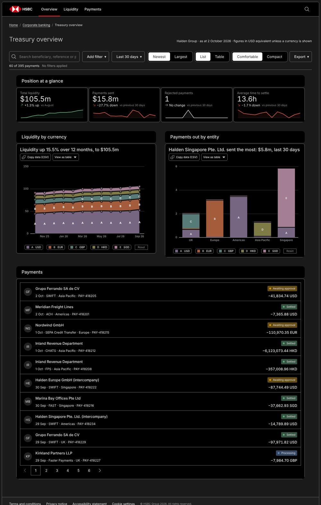
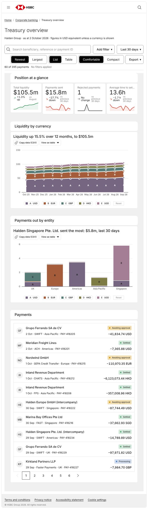
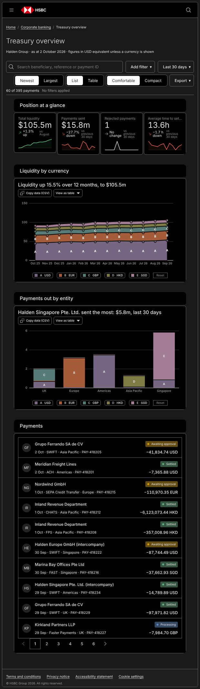
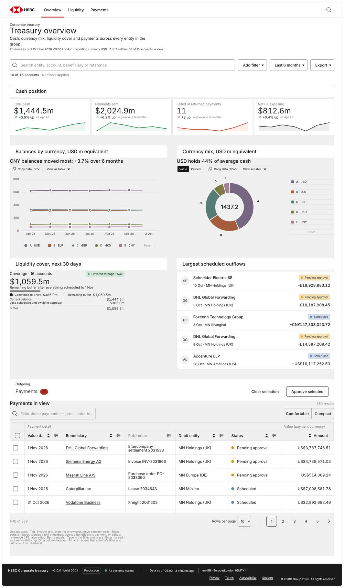
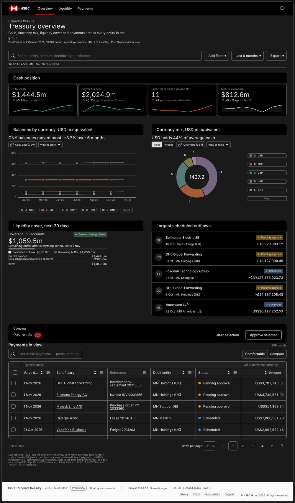
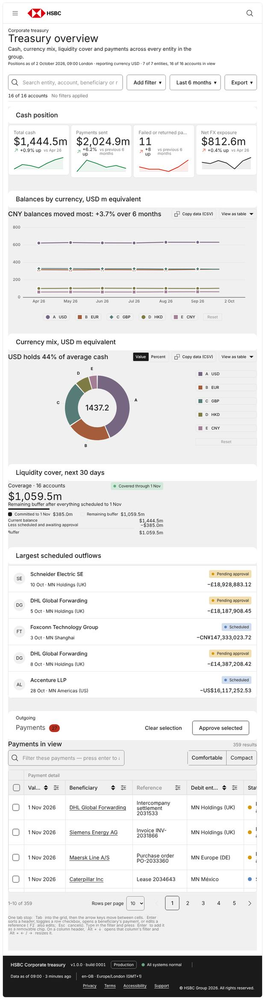
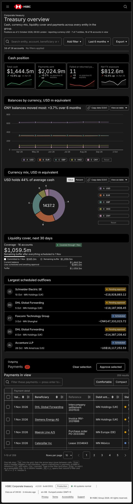
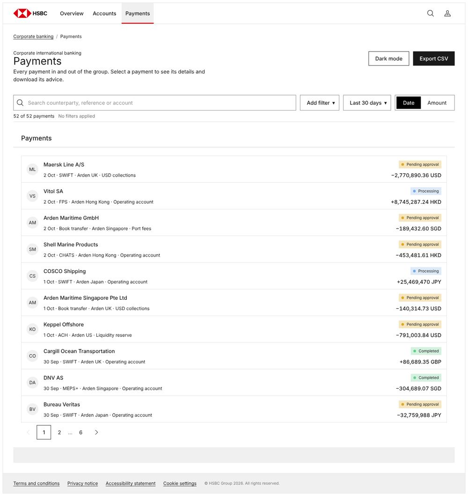
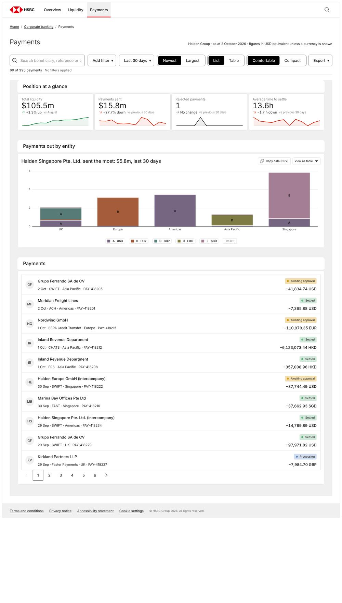
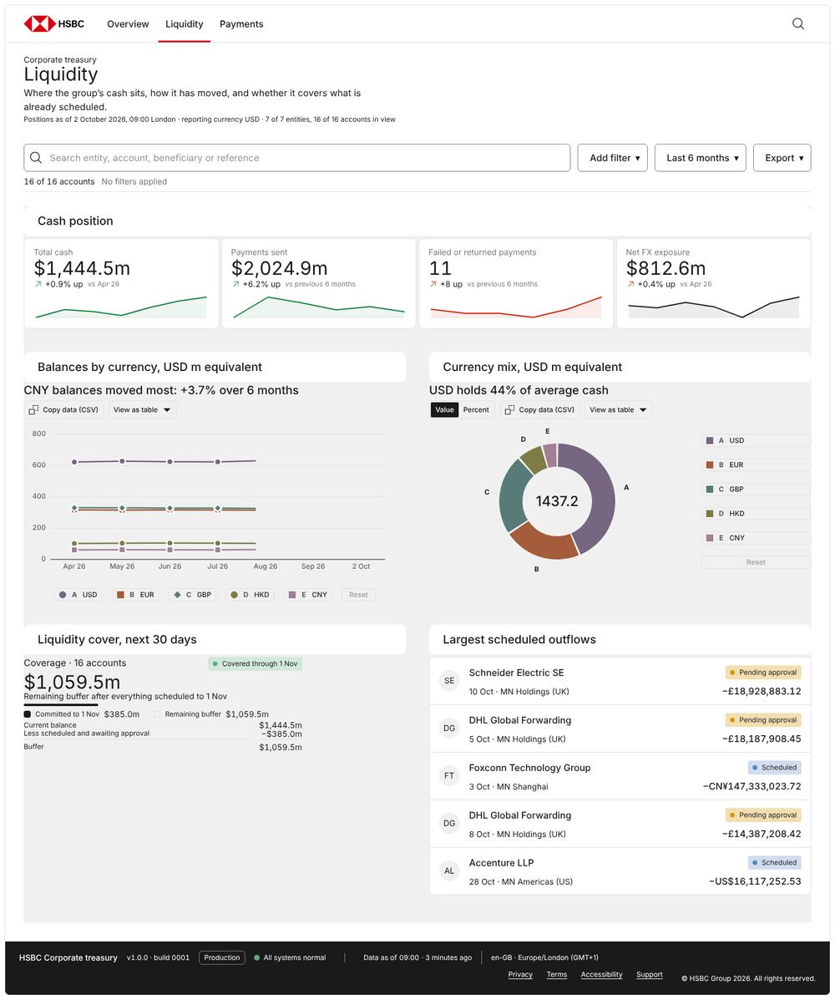
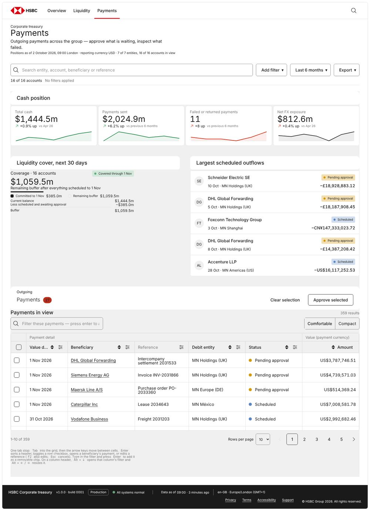
03 · Gates, inventory, charts — run after each freeze on a copy inside that arm's pack
| Check | G1 | G2 | G3 |
|---|---|---|---|
_validate_receipt.py | FAIL:NO-RECEIPT | FAIL:NO-RECEIPT | FAIL:NO-RECEIPT |
_validate_screen.py | FAIL — compose: hex #218 (a comment) | PASS | PASS |
_validate_screen.py --load (B6's fix) | load clean, 0 / 0 | load clean, 0 / 0 | load clean, 0 / 0 |
_validate_example_fence.py | 3 fails (TRACE ×2, SKILL missing) | 3 fails | 3 fails |
ci-template/run-gates.py (pack root) | 41 pass · 7 FAIL | 41 pass · 7 FAIL | 41 pass · 7 FAIL |
| canon scopes used | 11 | 13 | 17 |
| charts (engine-drawn) | line ×1 | stacked area, bar | line, donut |
| engine script blocks byte-equal to a pack snippet | 4 of 7 | 6 of 10 | 6 of 7 |
dv-behaviour.js carried verbatim | yes | yes | yes |
| data | fictional "Arden Maritime Group", plausible; straight-through rate a flat 100.0% | fictional "Halden Group", plausible | fictional "Meridian Northwind", plausible; scheduled payments run to 1 Nov |
04 · #307 (v1.0.14) → G1 · G2 · G3 (v1.0.15 candidate)
| Row | #307 | G1 | G2 | G3 |
|---|---|---|---|---|
| Theme | Mono (grill unanswered) | Mono (grill skipped) | Console (answered) | Console (answered) |
| Scores | 3/3/2/2 | 2/3/3/3 | 3/3/1/2 | 3/3/3/3 |
| Canon scopes | 10 | 11 | 13 | 17 |
| Engine charts | 2 | 1 | 2 | 2 |
| Pageerrors in the drive | 25 (one message) | 0 | 4 (two messages) | 0 |
| Wrote to a detached node | yes, on load | no | yes, on nav | no |
| Screen gate | FAIL on a comment (a11y) | FAIL on a comment (compose) | PASS | PASS |
| Example-fence gate | did not exist | refused | refused | refused |
| Traced a template body | no | no (never opened one) | no | no |
05 · F01 and F02, by Playwright assertion
| Defect | Assertion | Status |
|---|---|---|
F01 — data-theme on <body> beside a .cn-* scope kills dark | All three: data-theme only on html.canon, null on body, body carries no cn- class; light→dark moves page rgb(255,255,255)→rgb(26,26,26) and the metric tile rgb(240,240,240)→rgb(26,26,26); G1's Dark mode button by click does the same (f01.json) | does not reproduce (3 of 3) |
| F02 — controls rendered after load are dead | The served HTML holds 0 [data-action=open-payment] rows, the live page 6 / 10 / 15; clicking the first rendered row opens the drawer with focus inside it in all three (drive.json → F02_premise, step "F02 open…") | does not reproduce (3 of 3) |
| #307's F01 class — a render writes a node the view detached | G2 throws on Liquidity and Payments nav; a headless load of G2 is clean (gates/screen-load.log), so B6's load check cannot see it | reproduces in G2 |
06 · Findings
skills/generate-from-canon/SKILL.md:154 (rule 7a's code block) opens with <div class="cn-template-dashboard-bento">; :58–68 (rule 1a) says _validate_example_fence.py refuses a page that wears a template's scope. All three arms followed 7a, and all three named the contradiction in their own Gaps (G1 Gaps.md:20, G2 :28, G3 :84). The gate refused all three.knowledge/_validate_example_fence.py:145 builds \bcn-(template-dashboard|…)\b; \b matches at the hyphen, so a page wearing cn-template-dashboard-bento (which the same gate reports as UNFENCED) is reported as wearing the fenced cn-template-dashboard. Its shingle check also counts the tpl-* grammar that rule 7a prescribes (36 / 127 / 280 shared runs)._validate_example_fence.py:49 looks for apollo-spider/skills/generate-from-canon/SKILL.md; the pack ships it at skills/generate-from-canon/SKILL.md, so the gate prints SKILL missing and FAILs on every pack, pages or not (run-gates.log: 0 pages judged, still 1 failure).s308-D15 fix 1's skill half, notes/_lanes/313/B6/skill-step9.diff, still passes git apply --check at 853d7f56, so it never landed; the candidate's SKILL.md has 0 lines matching "headless" and still says, at :334, "No eyes, no browser… stop". The gate half did land (_screen_load.py ships, --load runs clean on all three).G2/drive.json → pageerrors, stacks at dashboard lines 2440 and 2327); setView() (lines 2516–2521) calls renderAll() before writeURL(), so the throw also costs the view its place in the URL and its reload. This is #307 F01's class, moved from load to navigation, where B6's one load cannot reach._validate_screen.py on #218, the session number inside a CSS comment it copied from Filter-toolbar-bar.reference.html:123 (G1 dashboard.html:23). _validate_compose.py:282–284 takes the raw <style> text, though the module has strip_css_comments() at :89. B6 fixed this class in the a11y check only.G1/seed.json, components[24].id) is component:template-dashboard-bento. Consistent with the fence gate's own "UNFENCED, owed" line, inconsistent with 1a's "the seed cannot name it". No arm opened the template.python3 ci-template/run-gates.py at each pack root: 41 pass · 7 FAIL · 0 could-not-ask, identical in all three. The seven: _validate_composition, _validate_example_fence (F03), _validate_fit_physics, _validate_geometry and _validate_own_size ("no input files"), _validate_polarities (refuses with no argv), _validate_receipt ("needs at least one page path"). The design contract ends on this command.data-apollo-theme="console" and render Console's grey wall and rounded groups; G1 announced Mono and square before building. The widest #307 gap (theme) is closed by the protocol, not by the pack.07 · Ruling-shaped questions — his, not answered here
cn-template-dashboard-bento the bento grammar's scope, which every dashboard may wear, or a template's scope, which no build may wear? Rule 7a and rule 1a say opposite things today, and every cold build lands on one side of the gate.08 · Recommendation — not a ruling
HOLD. The fact: all three fresh sessions followed rule 7a's code block (SKILL.md:154) and all three were refused by the pack's own _validate_example_fence.py, so as shipped every on-canon dashboard fails a gate it is told to run; and the headless-load step from s308-D15 is not in the skill. The pages themselves earned 11, 9 and 12 of 12.